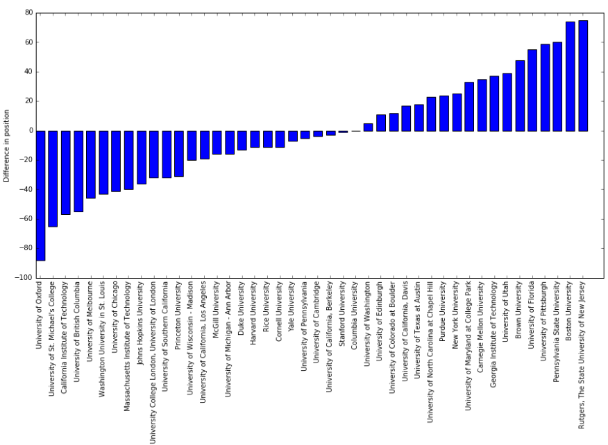

Comparaison with Shanghai rankings
The overlap between the first hundred universities of the Shanghai rankings and of our ranking contains 44 universities. In general the two rankings are reasonably similar. For example, the entire top 5 of the Shanghai ranking is present in our ranking, where the University of California and Stanford University even appear in the top 5. We think it is interesting that we get similar results to the Shanghai ranking simply by looking which universities are the most represented in Google's search results.
The figure below shows the difference in rankings between the universities present in both rankings. 
Country by country breakdown
Our rankings are heavily domainated by English speaking universities. On the one hand, this could have been expected because all of the search queries we use are in English. On the other hand though, many universities have websites in English and so should not be penalised so much in theory. However, as we were using google.com , it is possible that American websites were inherently favoured by the search algorithm.
Nevertheless a grand total of 74 countries make it into our rankings. The figure below shows the breakdown country by country.